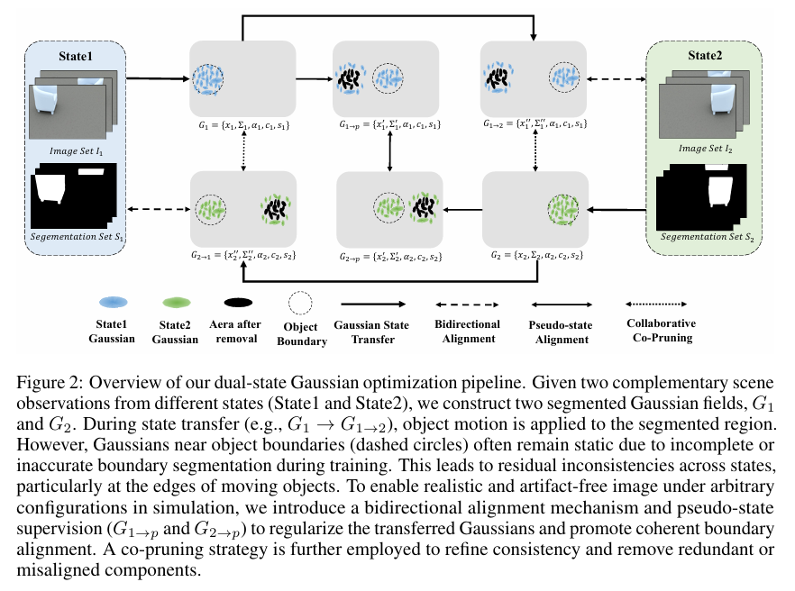
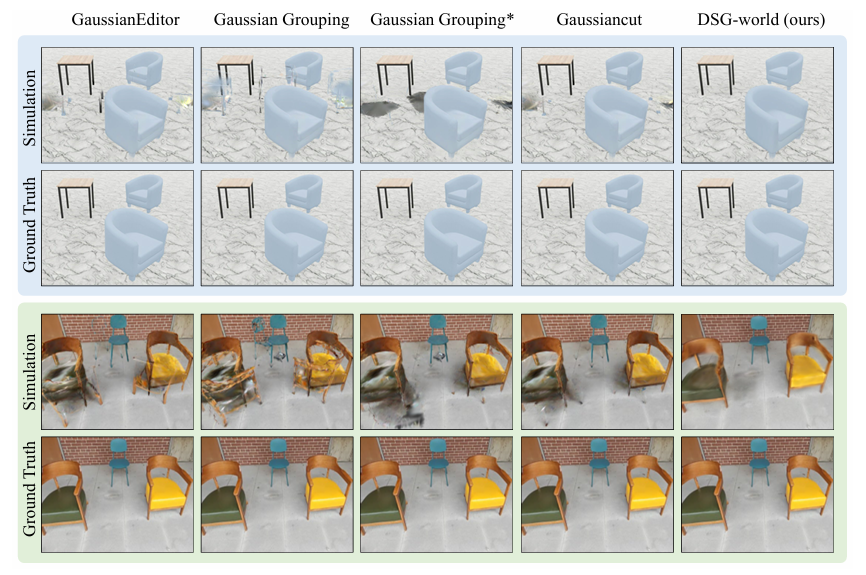

本文介绍了一种名为DSG-World的新方法，可以从双状态视频中学习3D高斯世界模型。该方法能够从有限的、稀疏的真实观测中构建一个完整、可编辑的三维世界模型，包括物体遮挡的部分。
论文链接：DSG-World: Learning a 3D Gaussian World Model from Dual State Videos
引言
从有限的、部分遮挡的真实世界观测中构建3D世界模型是一项具有挑战性的任务。传统的3D世界建模方法存在一些局限性，包括训练困难、缺乏明确的3D结构和物理一致性，以及在处理单个状态观测时因物体遮挡而需要进行复杂的多阶段处理等问题。
浙江大学的研究人员在论文《DSG-World: Learning a 3D Gaussian World Model from Dual State Videos》中提出了一种新的框架，利用同一场景在两种不同物体配置下的双状态观测，从而构建3D世界模型。
相关工作
当前的3D世界建模方法大致可分为两类：
- 基于隐式生成模型的方法：这类方法通常难以训练，并且缺乏明确的3D结构和物理一致性，导致它们在需要精确交互和模拟的任务中表现不佳。
- 基于显式3D表示的方法：虽然3D高斯溅射（3D Gaussian Splatting）等技术能够显式地重建场景，但当处理单个状态的观测时，常常因为物体遮挡而需要进行复杂的多阶段处理，例如分割、背景补全和图像修复。这些步骤不仅增加了系统的复杂性，还容易引入和累积错误，导致最终生成的场景失真或模糊。
方法
DSG-World利用同一场景下两种被轻微扰动的观测状态。这两种状态的视频提供了互补的可见性。在状态一中被遮挡的区域，在状态二中可能变得可见。这种互补信息有助于缓解状态转换中的遮挡问题，使得场景重建更加稳定和完整。
DSG-World是一个端到端的框架，它直接从这两种状态的观测中构建一个分割感知的3D高斯世界模型，无需进行图像修复或依赖密集的观测数据。
实现流程
DSG-World的实现流程包含以下几个关键步骤：
1. 双向对齐 (Bidirectional Alignment)
框架首先为两个状态分别构建高斯场（G₁ 和 G₂）。然后，它通过已知的物体变换关系，将状态一的高斯场转换到状态二的配置下，并将其渲染结果与状态二的真实观测进行比较，反之亦然。这种双向的监督强制模型学习到两个状态之间的光度和语义一致性，确保物体在不同配置下的对应关系是准确的。
2. 伪状态引导对齐 (Pseudo-state Guided Alignment)
为了进一步提升模型的泛化能力，研究者们引入了一个伪中间状态。这个虚拟状态是通过几何约束构建的，作为两个真实观测状态之间的共享参考空间。通过将两个高斯场都转换到这个共同的伪状态下进行比较和对齐，模型可以更好地弥合两个输入状态之间的差异，从而更有效地推广到未曾见过的中间场景配置中。
3. 协同协修剪 (Collaborative Co-Pruning)
由于初始分割可能不完美，状态转换后可能会留下一些错位或多余的高斯点。DSG-World设计了一种协同修剪策略。它通过检查一个转换后的高斯点能否在目标状态的几何中找到可靠的对应点来滤除这些异常值。这种双向的几何一致性检查能有效移除冗余或错位的成分，使模型更加干净、精确。
4. 协同粘贴 (Co-pasting)
与传统方法依赖算法进行背景补全不同，DSG-World利用双状态的互补性，直接从另一个状态中粘贴被遮挡的背景高斯点来完成场景补全。这种方法称为协同粘贴，它比基于修复的方法更准确。
实验结果
研究团队在自己构建的包含合成和真实场景的数据集上进行了实验。他们将DSG-World与多种基于分割和修复的主流方法进行了比较，如GaussianEditor、Gaussian Grouping和GaussianCut等。
定性比较
在模拟新的场景状态时，传统方法往往会出现物体边界模糊、背景损坏或产生伪影等问题。而DSG-World生成的场景则较为干净、完整，与真实的场景配置高度一致。
定量比较
在量化指标上，DSG-World在峰值信噪比（PSNR）和结构相似性（SSIM）两项关键指标上表现良好。这表明其生成的场景在像素层面更接近真实情况，在结构上也保持了较高的保真度。
| 类型 | 模型 | Sim PSNR (↑) | Real PSNR (↑) |
|---|---|---|---|
| 分割 | GaussianEditor | 25.82 | 23.25 |
| Gaussian Grouping | 26.22 | 22.74 | |
| Gaussiancut | 26.79 | 23.43 | |
| 分割+修复 | Gaussian Grouping*+knn | 29.31 | 23.28 |
| DecoupledGaussian+remesh | 29.50 | 24.28 | |
| Graphcut+depth | 30.88 | 24.40 | |
| 双状态 | DSG-world (ours) | 38.37 | 27.52 |
消融实验也证明了其各个组件的有效性，特别是伪状态引导对齐策略，它对性能提升起到了重要作用，因为它能有效解决仅靠两个状态无法完全消除的遮挡模糊性问题。
局限性
该方法要求两个状态的观测具有互补性，如果物体移动范围过小，导致某些区域在两个状态下都被遮挡，那么重建的准确性就会受到影响。此外，当前模型没有考虑光照变化，移动物体后其静态的阴影会影响真实感。
结论
DSG-World通过双状态观测策略，绕开了传统3D世界建模中对复杂后处理和修复流程的依赖，为构建高效、精确且可交互的3D世界模型提供了一条新的路径。该方法能够高保真地渲染场景，并支持对物体的实时操控和模拟，在机器人技术、虚实转换等领域具有应用潜力。
参考文献
DSG-World: Learning a 3D Gaussian World Model from Dual State Videos